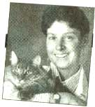

Knowing some first aid basics can save your animal's life.
While I hope you never have to use this information, I feel obligated to give you a few tips on how to handle an animal emergency. Accidents happen despite our best intentions and knowing basic first aid is a definite plus when they occur. The steps you take at home before the veterinarian arrives or before you are able to reach one may not only alleviate pain and calm a distressed animal, they can prevent further injury to your animal and those assisting.
Needless to say, in any emergency situation, you have to think of your safety as well as your animal's. If the animal you are assisting is not your own, try to first get information about its rabies vaccination status. Be wary of reaching for the animal spontaneously if this is uncertain. It may bite out of anxiety and fear-especially if it is in pain or shock. Try to stay away from the head of the animal. If you cannot avoid being close to the mouth, put a temporary muzzle on before handling and make sure the nose is left uncovered. Horses and cattle will paw or kick when they are frightened. Attempt to remain as close as possible to a horse's body to avoid a full powered swing. Cattle prefer that you stand around their back end rather than near their heads.
In an emergency, remember the algorithm ABC. A means Airway: make sure an animal can breathe freely. Clean any vomit or saliva away from the mouth. If the mouth is injured, make sure the nose is clear and vice versa. Horses and cattle cannot breathe through their mouths for lengthy periods, so clearing foreign material from around their nose is very important. B means Breathing; find out if the animal is taking respirations. You can give mouth-to-nose artificial ventilation by cupping your hands around the animal's snout and exhaling into the cupped area once every two or three seconds. Animals that are not respiring will have very deep red colored mucous membranes that appear blue at times. C means the Cardiac system: to take an animal's pulse, feel around the heart first. The heart in most domestic animals is located on the chest under the elbow. If you do not feel a pulse, start compressing the chest in this area at a rate of once every second.
Animals are usually in a state of shock after an accident. Shock refers to the fact that the vital organs are not receiving enough blood and oxygen. Signs of shock include pale mucous membranes, racing pulse, fast breathing, and loss of consciousness. Make sure the animal is resting comfortably on a stable surface and getting plenty of fresh air. Medical treatment such as intravenous fluids and drugs that treat the circulation are necessary: get to your veterinarian's office quickly.
Makeshift splints applied before transporting the animal to a vet can be made from towels, cardboard, and tape.
Treating Cuts
Lacerations are common injuries in accidents. Injuries of the chest or over the ribs should be treated immediately. Any laceration-these in particular-should be covered with a clean cloth or compress. Those lacerations over the chest and abdomen should be further covered with an elastic bandage or wrap as well: if air enters the chest or abdomen via one of these penetrating wounds, the results could be devastating. Lacerations and bone protrusions should also be covered, but there is rarely the need for a tourniquet. In fact, they can worsen injuries to the feet and legs. Horses with limb injuries benefit from a leg wrap typical of that used for shipping purposes.
Fractures
Suspect a bone fracture or dislocation if you hear cracking noises or bone movement or if there is limping, swelling, or change of shape (buckling) near the injury. You may want to stabilize it with a temporary splint. Heavy towels or rolled up blankets make great splints if applied like a normal Ace bandage, with masking tape applied to the outermost wrap. These injuries usually need to be treated through casting or surgery.
Burns
Burns can be caused by scalding hot water or chemical irritants, including some flea products. The skin is red and painful when touched. The hair often begins to fall out as blisters form underneath. Any suspect burn area should be treated by placing the wound under mildly cool water and rinsing the irritant away. The underlying affected skin can be covered with a clean cloth before transport to the veterinarian.
In general, steer clear of a sick animal's mouth unless you can secure it.
Poisonings
Poisonings are common emergencies that are unfortunately very difficult to treat, whether at home or at the hospital. Dogs and cats eat and drink all kinds of toxic substances such as antifreeze, insecticides, rat poisons, and snail baits. Believe it or not, one thing you can do at home to help treat these incidents is to bathe the dog immediately. Chances are that they've rolled in or tangled with whatever they ate and topical absorption of the poison is likely until you wash it with a mild detergent like baby shampoo or dishwashing soap. The rare poisonings in cows, horses, goats, and sheep are usually related to feed products, downed trees, or paint from fences or buildings in which they're housed. In cases where you suspect farm animal poisoning, seek veterinary care as soon as possible: bloat, colic, and aspiration pneumonia are likely consequences of trying to treat these at home with various oral remedies.
Seizures can occur as a result of many poisonings and if your pet begins to seizure, do not attempt to grab its tongue. It's a rarity that an animal will swallow its tongue or suffer respiratory problems during a seizure, so simply stay clear of the mouth. Move things out of the animals way and wait for a few moments. Most seizures last only one to two minutes and once finished, you can take the animal to the veterinarian. Never make the animal drink milk, oil, or hydrogen peroxide until you consult with the veterinarian: it could hasten a poison's absorption time. Also, it's not a good idea to make an animal vomit if the toxic substance does the same harm coming up as it did going down. Antifreeze poisoning needs to be treated immediately, as kidney failure can result soon after ingesting as little as a teaspoon.
In any emergency, try to calm your animal and keep it comfortable. Attempt to get a sense of how seriously it is injured before calling the veterinarian: this will help rectify the situation as the hospital will be most prepared when you arrive.
NAVICULAR DISEASE IN HORSES
This degenerative tendon and bone condition often results from improper trimming and
shoeing.
Dear Andrea:
A month ago we purchased a mini lop-eared rabbit.
He's quite lovable but chews on everything. Do rabbits teethe?
Will he grow out of this?
Sandy McKenzie
Braham, MN
Dear Sandy:
Rabbits unfortunately do not have baby or deciduous teeth, so what we refer to as "teething" or new teeth erupting cannot occur. Their permanent teeth, however, are in by five or six weeks of age and continue to grow at the rate of 10-12 cm/year throughout the life of the rabbit. Most veterinarians like to encourage chewing on certain things for this reason-to wear teeth down as they grow. But the type of chewing that you describe sounds more like a behavior problem than anything else.
I would discourage you from allowing the bunny free run of the house. They are naturally curious and, as chewing is natural to them, it is hard to discourage this if something is in reach. Rabbits can be kept in hutches for part of the day and even litter box trained when they run loose (this can be difficult if not started early in life).
Try to provide plenty of fresh greens for him to chew on as well. We now realize that alfalfa hay may not be the best sole greenery for rabbits; likewise, iceberg lettuce is simply nonnutritive and is habit-forming (once rabbits start to eat it, they may go on a hunger strike with the rest of their vegetables). A quality mixed grass hay is best. Carrots may help but believe it or not, most domestic bunnies will not chew continuously on these. Rolled oats, stale bread, and different fruits can be supplemented, but make sure you do not provide these as rewards for chewing on other things; your timing of feeding is essential! If even when crated, he has a tendency to chew, try giving him stainless steel balls or weights to play with, or alternatively anything plastic that has rounded edges, like a good whiffle ball, which he can't seem to get his mouth around. If cage chewing is a problem, try painting the bars or sides with hot Chinese oil or Tabasco sauce. Some spicy condiments make great deterrents!
Dear Andrea:
Our 6-year-old Nubian goat started having difficulties standing about 2 months ago.
Our veterinarian told us she has an arthritis virus. What is this and how did she get it?
Mary Shepard
Wilmington, NC
Dear Mary:
Caprine arthritis encephalitis is a disease produced by a retrovirus. Retroviruses are slow viruses that infect animals early in life, yet they do not appear until months or years later. In fact, some infected animals develop virtually no signs of disease at all. Once an animal becomes infected, it remains infected for the rest of its life.
Kid goats may show signs of the disease when they are three to four months old. They may become uncoordinated or even paralyzed in their hind limbs and forelimbs. Older animals are more likely to be affected: they lose weight and simply become lame. One or more of their joints may become swollen and painful. The disease may progress gradually or rapidly and can become so severe that movement or standing is restricted. Certain goats may develop pneumonia as well.
There is no effective treatment for the virus. Adult goats can be treated symptomatically with aspirin or other pain relievers and should have their feet trimmed regularly. Affected animals should be housed separately and be fed a highly nutritious forage supplemented with vitamins. Mothers can pass the disease to their offspring, so feeding "safe" colostrum and pasteurized goat and sheep milk to the kids once they are born is the safest way to prevent the disease from spreading throughout the herd.
Dear Andrea:
Navicular disease was diagnosed in our horse a short time ago. Do you have any advice for us? I read about kelp being of some help to animals' health. What value would this have for horses?
Steve De Wilde
Perryville, MO
Dear Steve:
Navicular disease is a degenerative disease of the tendons of the lower foot and the bones beneath the hoof. Quarter horses and those horses that have small feet and upright legs seem to be more prone to the disease. Improper trimming and shoeing may also be a cause. There are many theories behind why this disease occurs. One of the most interesting is that trauma or concussion from hard work, improper conformation, and poor shoeing causes some of the arteries in the foot to clot. Once this occurs, blood has difficulty getting to the smaller bones of the foot. Without a decent blood supply, they start to degenerate. This causes a great deal of pain to the animal as the tendons that are responsible for supporting the leg rub on one degenerating bone in particular, known as the navicular bone. Hence, the name, navicular disease.
What can be done to help the animal with this? Well, first and foremost, some corrective shoeing. The heels of the animal are where the pressure is worse, so a farrier will usually roll the toe and raise the heels off the ground with some pads and cushions. Second, horses with this problem need rest and some pain relievers, similar to what we take in aspirin. Your veterinarian can prescribe the proper form. There are also some anticoagulants that may help prevent further clotting in the arteries leading to the foot. A change in the type of exercise and activity the animal gets will also be in order.
There are currently a number of nutritional supplements out on the market that horse folk are using as feed additives. In hopes of finding that miracle vitamin or trace material, many people have added seaweed and kelp to the horse's diet to increase the amount of iodine the animal is getting. The thought behind this is that the thyroid gland needs iodine to work and, being the master gland in the body, the more iodine, the more activity and good health. Not so though, because an excess of iodine in the diet can cause many more thyroid problems that it can cure. Most animals will obtain the necessary iodine they need via a good old salt block to lick on now and then.
Dr. Looney would be glad to answer any questions you have about animal health. Send your question to "Country Vet," do Mother Earth News. P.O. Box 129, Arden, NC 28704. Send us a photo too!
|
 PHOTOS BY JON REIS |
RICK KIRMAN |
|
|
|
|
|